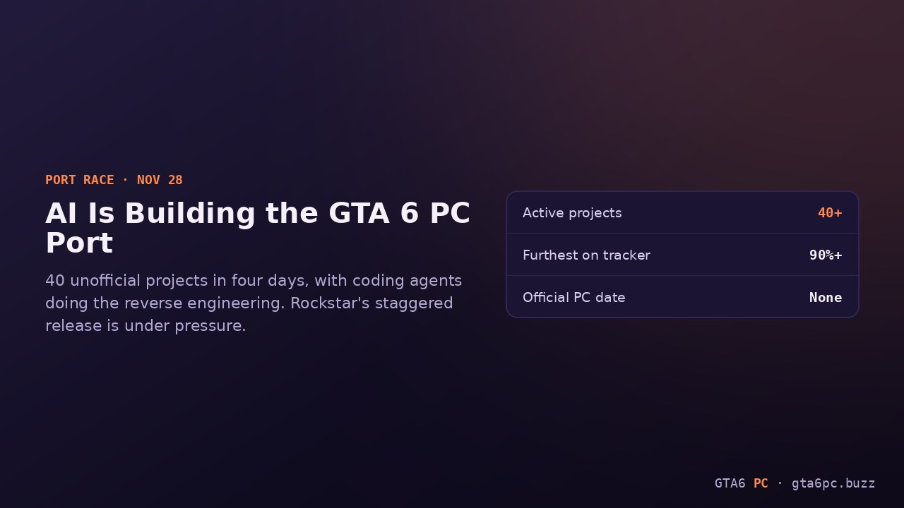

AI coding agents are building GTA 6 PC ports, and Rockstar's staggered release is under pressure
The fastest-moving part of the GTA 6 PC port race is not a person. It is a coding agent. The Decoder reported on November 27, 2026 that developers are handing the reverse engineering of the leaked Xbox build to AI tools such as Anthropic's Claude Code, and that more than 40 unofficial port projects started within four days of the executable leaking. The furthest is past 90 percent on the tracker platform's own scale toward a playable build. Rockstar has announced no official PC version, and Take-Two says it is strengthening its defenses. The question is whether the staggered release model can survive tools that compress months of work into days.

What the AI tools actually do
The work of porting a console game to PC is mostly translation. The Xbox Series X and a Windows PC share the same x86-64 processor family, so much of GTA 6's code can run on a PC directly. What is missing is everything around it: the console's system software, its graphics calls, its file handling. The port projects replace those pieces one by one, either by recompiling the code into a native Windows program or by building a compatibility layer that translates the console's calls as the game runs.
That work used to be slow, manual and expert-only. A developer would read disassembled code, work out what a console function did, and write a Windows replacement by hand. The Decoder reports that developers are now handing much of that work to AI coding agents. Tools such as Claude Code and Google's Antigravity analyse the binary, propose translations, and rewrite code in bulk. One group even livestreamed the process, with agents working through error logs and crash reports while viewers watched. Twisted Voxel, reporting on the same race, notes that modders are using AI tools to parse error logs and fix crashes far faster than manual debugging would allow.
The agents do not write a finished game. They do the repetitive middle of the job at a speed no person matches, and people still have to direct them, test the result and fix the mistakes. What changed is the rate: work that The Decoder says used to take months now takes days, and a scene that needed a specialist team can now be attempted by a small group with an agent doing the heavy lifting.
40 projects in four days
The scale is what makes this different from a normal modding scene. Less than four days after the executable leaked on November 23, a tracking platform listed 40 active projects, according to The Decoder. Nearly half of them could boot the game on PC. The furthest was more than 90 percent of the way to a playable build on the platform's own rating scale. Footage of an unofficial PC multiplayer mode surfaced on November 26, and the platform's operator verified it: two players, vehicles and voice chat at 25 to 30 frames per second.
The 90 percent figure needs a careful reading, and the timing shows why. The Decoder published its report at 15:37 UTC on November 27. The leading project at that moment was Belobug, which PortWatch rated at 91.3 percent toward playable. Hours later, at 18:33 UTC the same day, GitHub removed Belobug and its author account, and our Belobug report covers that removal. VIctory-NVIDIA now leads the board at 90.0 percent. The tracker score is a tracker's opinion, built from READMEs, commits and stream footage, and the board can change its leader in a single day without a line of code being written.
The count itself is also worth keeping in proportion. Forty projects does not mean forty working games. Most of them are forks of the same two public codebases, VIctory and XCL, and many stall at the menu screen. The number that matters is the one The Decoder puts next to it: nearly half can boot the game. That is the part that would have taken months a year ago.
Why this threatens the staggered release
Rockstar's release model is simple: consoles first, PC later. GTA 5 arrived on PC 19 months after consoles. Red Dead Redemption 2 took about a year. The delay is not an accident. It protects console sales, and it protects the online launch, which is where the money is. The Decoder reports that nearly 80 percent of Take-Two's total revenue in fiscal year 2026 came from microtransactions and recurring digital spending, and that GTA Online has brought in more than 5 billion dollars over its lifetime.
An unofficial PC port threatens both halves of that model. A playable PC version before Rockstar's own would pull players away from the console version, and an unofficial multiplayer mode, even a rough one, arrives before Rockstar's online mode exists at all. GTA 6 launched as a single-player game only, with no release date for its online mode. The unofficial multiplayer footage from November 26 is a prototype with two players at an airport, not a rival to GTA Online. But it shows the direction: the community reached multiplayer in a week, using tools that did not exist when Rockstar planned this launch.
There is a precedent, and Take-Two knows it. The company took the same posture against the FiveM alternative multiplayer and roleplay mod in 2015, before Rockstar ultimately acquired FiveM developer Cfx.re in August 2023. The Decoder draws the parallel directly: a community project that starts as a legal problem can end up absorbed. Nothing suggests that will happen here, but it shows Take-Two has been in this position before.
Take-Two's answer: defenses, takedowns and a Claude restriction
Take-Two saw this coming before launch. In the investor Q&A after the company's November 9 earnings release, and in a separate interview with IGN, CEO Strauss Zelnick warned anyone thinking of developing an AI clone of the game that Take-Two is strengthening both its technical defenses and its legal activities. He called AI cloning more of a creative threat than a financial one, saying it matters to developers and players alike that people get the experience Rockstar envisioned, and that a clone cannot replicate it. He added that Take-Two protects its intellectual property vigilantly, and that the company is utterly focused on enhancing its technical defenses. His summary to investors was blunt: the company is focused on these concerns and is not in the least cavalier about them.
The legal response arrived fast. Take-Two's DMCA notice of November 24 disabled Leonida, the best-known project, and 3,007 related repositories. GitHub removed Belobug and its author account on November 27 without a published notice. Our takedown tracker lists every project that has gone offline so far. The technical response is quieter: Sony rolled out a PlayStation 5 firmware update shortly before launch, which players took as a move against fast-moving console jailbreaks, since a jailbreak on the firmware GTA 6 requires could put the game on PC through a different route.
The third response came from the toolmaker. IGN reports that Anthropic issued an update for Claude that made it harder to use the model for video game reverse engineering, and Outlook Respawn reports the same restriction. The agents are the reason the race moves this fast, so limiting the agents is the most direct brake available. It is also an incomplete one: Claude Code is not the only agent, Google's Antigravity is named in the same reporting, and the code that already exists keeps circulating in forks.
Could this bring the official PC version forward?
That is the question PC players care about most, and the honest answer is that nobody has confirmed it. Former Rockstar North technical director Obbe Vermeij told Rock Paper Shotgun that Rockstar may be keen to release a PC version sooner to avoid losing money to AI knockoffs. The logic is straightforward: every month without an official PC version is a month the unofficial builds improve, and a playable unofficial version would undercut the launch Rockstar is saving for later.
The reported window is the first quarter of 2027, from a GamesBeat report citing four industry sources. Rockstar has not confirmed it. Our release date page tracks that story, and nothing in the AI reporting changes the status: no date, no announcement, and no finished public build from either side. What the reporting does change is the pressure. A year ago, Rockstar could assume a PC port took months of expert work. This week, 40 projects started in four days, and the tools that did it are getting better, not worse.
The bottom line
AI coding agents have changed the GTA 6 PC port race from a specialist project into a 40-project sprint. The Decoder's numbers, 40 active projects in four days, nearly half booting the game, and one past 90 percent on a tracker scale, describe real speed, and they describe it honestly: tracker scores, not benchmarks, and light scenes, not a playable game. Take-Two saw it coming, warned about it before launch, and is answering with takedowns, technical defenses and a restriction on the tool itself. Whether that is enough depends on the one thing Rockstar has not said: when the official PC version arrives.
Quick answers
Are AI tools really building GTA 6 PC ports?
According to The Decoder, developers are using AI coding agents such as Anthropic's Claude Code and Google's Antigravity to automate binary analysis, recompilation and compatibility layers, instead of spending months on manual reverse engineering. The tools do the repetitive translation work. People still direct the projects, test the builds and fix what the agents get wrong.
How many GTA 6 PC port projects are there?
A tracking platform listed 40 active projects less than four days after the executable leaked, according to The Decoder. Nearly half of them could boot the game on PC. The furthest was past 90 percent on the platform's own rating scale toward a playable build.
What is Take-Two doing about AI-built ports?
Take-Two CEO Strauss Zelnick said in the November 9 earnings Q&A and an IGN interview that the company is strengthening its technical defenses and legal activities. Take-Two's DMCA notice of November 24 disabled Leonida and 3,007 related repositories. Anthropic has also restricted Claude's ability to help with video game reverse engineering, according to IGN and Outlook Respawn.
Does the 90 percent figure mean the game is almost playable?
No. The 90 percent is the tracker platform's own rating scale, built from project READMEs, commits and stream footage, not a benchmark. It measures progress toward the tracker's definition of playable. No project has shown the full game running at a stable frame rate, and the fastest builds still run at 20 to 30 FPS in light scenes only.
Will AI ports make the official PC version arrive sooner?
Possibly, but nothing is confirmed. Former Rockstar North technical director Obbe Vermeij told Rock Paper Shotgun that Rockstar may release a PC version sooner to avoid losing money to AI-built ports. Rockstar has not announced a PC date. A GamesBeat report points to the first quarter of 2027, which is still a rumour.
Last updated . We update this page when Rockstar announces anything new.
Sources
- The Decoder: Rockstar's AI dilemma, can GTA 6's staggered release model survive coding agents?
- AI Weekly: Claude Code fuels 40+ unofficial GTA 6 PC ports in four days
- TweakTown: Take-Two strengthens legal defenses against AI-built GTA 6 PC clones
- Dexerto: GTA 6 boss sends warning to pirates who make AI-generated PC version
- Outlook Respawn: Take-Two targets unofficial GTA 6 PC ports
- Silicon Report: AI agents speed reverse engineering of GTA 6, The Decoder reports